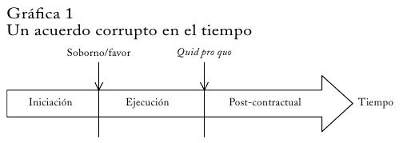

Economía Política
Unidad 7. Hay que dejar de robar por dos años. Corrupción y desgobierno.
La corrupción como problema
“Hemos identificado a la corrupción como el principal obstáculo al desarrollo económico y social” [Banco Mundial]
"La corrupción ha dejado de ser un problema local para convertirse en un fenómeno transnacional que afecta a todas las sociedades y economías, lo que hace esencial la cooperación internacional para prevenirla y luchar contra ella" [Convención de las Naciones Unidas contra la Corrupción]
"La corrupción atrapa a millones en la pobreza" [Transparencia Internacional]
¿De qué hablamos cuando hablamos de corrupción?
Enfoque moderno \(\longrightarrow\) se define a la corrupción como el uso ilegítimo del poder público para el beneficio privado.
Importa un acto ilegítimo e ilegal
Involucra una posición de poder público
Se persigue un beneficio de apropiación individual
El estudio de la corrupción definida de esta manera se desentiende de temas como la corrupción entre privados –i.e. departamento de compras y ventas de dos empresas; entre individuos; mafias.
El abordaje económico de la corrupción
En disciplinas como antropología cultural o sociología, el abordaje del fenómeno enfatiza normas sociales y valores morales; mayores niveles de corrupción se toman como un signo de degradación moral.
La economía enfatiza dos elementos: a) incentivos; y b) organizaciones.
- Las normas sociales varían ampliamente entre países –i.e. freebies a políticos y burócratas; lealtad al clan y al linaje preceden a la ocupación política.
Explicaciones culturales de la corrupción son importantes; pero, riesgo de explicación tautológica.
El abordaje económico de la corrupción (cont.)
El abordaje económico de la corrupción busca explicar porque países (regiones) similares llegan a diferentes estándares de normas sociales estables en el tiempo (equilibrios). Adicionalmente, es relevante estudiar cómo los países pueden trasladarse de un equilibrio a otro.
- Esta dinámica de cambio puede ocurrir de manera muy lenta –Africa subsahariana- o relativamente rápido –caso de Singapur. Elemento clave: impacto de los cambios en las políticas sobre la estructura de incentivos.
PONER
Un ejemplo
Me cuesta levantarme en diciembre: mi cuerpo me dice que debería estar hibernando en lugar de ducharme, afeitarme y conduciendo a través de los terribles embotellamientos de Moscú. Así que estoy siemprea punto de llegar tarde, y no me gusta esa sensación. Ergo,me tomé un atajoy un policía tráfico me hizo detener. No hacía falta que dijera nada, pero lo hizo.
“Esa no es manera de conducir”, dijo
Yo tampoco tenía que decir nada y no lo hice. Sólo le entregué mi licencia de conducirenvuelta en un billete de 500 rublos. El policía me devolvió la licencia y me saludó. Yo seguí mi camino. Ahorano tendría que ir al banco a pagar la multa. Pero seguramenteiba a llegar tarde: al hacerme detener de manera algo innecesaria, el policía me había hecho perder tres de mispreciadosminutos de la mañana.
[Leonid Bershidsky, escritor y periodista]
La corrupción como un “contrato”
Configuración de la situación de corrupción El sector público está siempre involucrado -a través el Estado, burócratas, funcionarios. Es una de las partes del contrato, es la demanda. La otra parte generalmente proviene de la sociedad civil –invididuos, empresas, sindicatos. Es la oferta. Se configura así un contrato secreto de intercambio entre las dos partes. El hecho generador es una posición de poder asimétrico que permite a una de las partes exigir algo a cambio de un bien/servicio que debería brindar en cumplimiento de su función.

Iniciación del acuerdo
El primer paso es encontrar un socio y, luego, negociar el contrato. En el mundo de la corrupción, ¿cómo y dónde encontrar el socio adecuado? El socio debe tener capacidad, voluntad y savoir-faire \(\longrightarrow\) “signaling”–i.e. fama, intermediarios, conexiones legales (conocidos, familiares, socios, etc.).
Luego se debe negociar el acuerdo: ¿quién, cómo y cuánto?. Tema del quid-pro-quo. ¿Hay estándares? \(\longrightarrow\) riesgo alto.
Ocasionalmente, la estrategia suele ser “freebies” o puestos/cargos en lugar de dinero. Más sutil pero más imprecisa.
Ejecución del acuerdo
Incentivos para no cumplir; mecanismos para forzar cumplimiento y costos de no cumplir \(\longrightarrow\) rehenes, contratos legales e intermediarios, violencia (amenazas), integración vertical, reputación, relaciones y aspectos sociales.
“Rehenes” \(\longrightarrow\) pagos a cuenta, señas; no se elimina el problema
Apariencia legal \(\longrightarrow\) pago de comisiones por intermediación. Alto riesgo
Violencia y extorsión, creíble y efectiva
Integración vertical de ambas partes corruptas (joint venture).
Reputación y repetición \(\longrightarrow\) posibilidad de sanciones.
Post-acuerdo
Debido a la ilegalidad, un contrato corrupto no tiene fecha de finalización; interdependencia mutua. Incentivos latentes a “soplar”. Puede funcionar como amenaza o como acción directa.
“Reciprocidad negativa” \(\longrightarrow\) causar daño a la parte que me engañó –a pesar de consecuencias negativas para mi persona.
Penas y castigos asimétricos \(\longrightarrow\) funcionario mas expuesto; situación de poder asimétrico favorable a la parte civil.
Caso: Bochum (ALE) un funcionario informó los nombres de los competidores en una licitación por autopistas; recibió luego un sobre con 2000 euros de la empresa adjudicataria para comprar el silencio.
Corrupción: algunos hechos estilizados
El Banco Mundial estima el costo directo anual de coimas y sobornos en más de un trillón de dólares
La corrupción ha fomentado la fuga de capitales en Africa por más de \(U\$S\) 400 billones; un cuarto de eso corresponde a Nigeria.
En Mexico, el hermano de Carlos Salinas atesoró más de \(U\$S\) 120 millones, lo que equivaldría a cubrir los costos de salud anuales para casi 600 mil personas.
Invertir en un país corrupto puede ser hasta un 20% más caro que en un país no corrupto.
Corrupción: algunos hechos estilizados (cont.)
La corrupción no es un fenómeno exclusivo de regímenes autocráticos o países sub-desarrollados: en países democráticos –Venezuela, Paraguay, Filipinas– y países desarrollados –Italia, República Checa- persisten altos niveles de corrupción
Experiencias de corrupción muy variables entre países –i.e. Bangladesh/Corea del Norte vs Finlandia; las percepciones acerca de este fenómeno también lo son
La corrupción tiene ciertas características endémicas y características de correlación autoespacial –Africa sub-sahariana; sudeste asiático; américa latina.
La corrupción tiene costos asociados que son cuantificables (estimables)

Tipos de corrupción pública
Se pueden distinguir diferentes tipos de corrupción según varios criterios:
Corrupción burocrática vs corrupción política
Corrupción extorsiva vs corrupción colusiva
Corrupción centralizada vs corrupción descentralizada
Corrupción burocrática y política
La distinción más usada es que refiere a la:
corrupción burocrática (petty corruption) \(\longrightarrow\) involucra el mal uso de cargo público para un beneficio privado y está vinculada con agentes públicos de cualquier esfera y jurisdicción –i.e. coimas a agentes de tránsito y control.
corrupción política (grand corruption) \(\longrightarrow\) involucra el mal uso del cargo público y el poder político para un beneficio privado y está vinculada con la maxima jerarquía política y funcionarios designados –i.e. coimas en el Senado.
Distinción no siempre útil y apropiada en todos los contextos.
Corrupción burocrática y política (cont.)
En regímenes comunistas –incluido China, Vietnam- y autoritarios, la distinción es prácticamente trivial. Algo similar pasa en países democráticos en que los burocrátas de máxima jerarquía son designados políticamente y no agentes públicos de carrera.
En muchos casos la corrupción burocrática (administrativa) difiere de la política: países democráticos con alta competencia electoral \(\longrightarrow\) políticos mucho más expuestos que los burócratas.
Otros países tienen una muy baja incidencia de corrupción burocrática pero muy alta corrupción política (EEUU; lobbies; laws for sale). Otros países tienen alta incidencia de ambos tipos (India, Argentina) aunque la corrupción burocrática es muy extendida.

Corrupción burocrática y política (cont.)
Una distinción importante entre corrupción política y corrupción burocrática es en relación a la oportunidad de cada una. La corrupción política al involucrar decisores de política, tiene lugar al nivel del diseño de la política.
La corrupción burocrática en cambio, al involucrar burócratas de todo tipo y nivel generalmente tiene lugar al nivel de la implementación de la política.
Esta distinción es importante por cuanto ambas tienen efectos diferentes. La corrupción política afecta la manera en que son tomadas las decisiones. En particular, se manipulan las instituciones políticas y las reglas de modo que afecta su funcionamiento efectivo.
Corrupción burocrática y política (cont.)
La corrupción política está casi siempre presente en los regímenes autoritarios. De hecho, la corrupción política es frecuentemente la base de la acumulación de poder, es inherente a lo lógica del sistema.
Sin embargo la corrupción política no es exclusiva de regímenes autoritarios. Caso de EEUU y lobbies; la ley Banelco en Argentina; mensalao en Brasil, etc.
Pero a diferencia de los regímenes autoritarios, la corrupción política tiene rasgos más bien episódicos.
Corrupción extorsiva y colusiva
corrupción extorsiva \(\longrightarrow\) aquella cuando una de las partes exige a la otra el pago de una suma extra (sobreprecio, coima, soborno) para proveerle un bien o servicio. Los burócratas reciben sobornos para hacer lo que ellos deben hacer. Ejemplos.
corrupción colusiva \(\longrightarrow\) aquella cuando una parte acuerda con la otra una transacción de modo que produzca beneficios a ambas partes. Es cuando un burócrata es coimeado para hacer lo que no se supone que haga. Ejemplos.
En este caso, ambos tipos de corrupción tienen claras implicancias diferentes
Corrupción extorsiva y colusiva (cont.)
En el primer caso, los objetivos de ambas partes pueden estar en claro contraste; se paga para acelerar un trámite pero nada garantiza un resultado exitoso ni que no se deban pagar sobornos adicionales –incentivos perversos; contrato implícito not-enforceable.
En el segundo caso, los objetivos de ambas partes están alineados. No existen incentivos (en principio) para que alguna de las partes vuelva sobre sus pasos o denuncie el acto.
La incidencia de este tipo de corrupción suele resultar en mayor persistencia de prácticas corruptas y de mayores consecuencias negativas asociadas a la corrupcion.
Analisis micro
Suponga un gobierno que provee un bien (pasaporte, licencia). Bien homogéneo. Existe una demanda privada por este bien \(\longrightarrow\) \(D(p)\). Es vendido por un agente que puede efectivamente restringir la cantidad que se vende
Puede hacer esto sin ningún riesgo de ser detectado y castigado. Esto lo hace un monopolista que vende un bien.
Suponemos que el objetivo del agente es maximizar la cantidad de coimas que recibe de la venta de ese bien.
Analisis micro (cont.)
Supongamos el precio oficial del bien es \(p\). Suponemos además que el agente no tienen ningún costo propio en la provisión del bien.
¿Cuál es el costo marginal de proveer este bien? Distinguimos dos casos.
Caso sin robo \(\longrightarrow\) el agente integra el precio al gobierno y además cobra coima. El costo marginal es \(p\).
Caso con robo \(\longrightarrow\) el agente no integra el precio al gobierno (oculta la transacción) y cobra coima. El costo marginal es \(0\).
Como monopolista fijara la venta en donde IM=CM. En el caso de corrupción sin robo restringira cantidad; en corrupcíon con robo no.
Analisis micro (cont.)

Analisis micro (cont.)

Analisis micro (cont.)
- Los dos casos son conceptualmente similares.
Corrupción centralizada y descentralizada
Cuando cayó el régimen extremadamente corrupto de Suharto en Indonesia se pensaba que podría haber cambios favorables en esta problemática. Sin embargo, la situación ha resultado ser peor que cuando estaba la familia Suharto.
- Tema central \(\longrightarrow\) como está organizada “industrialmente” la corrupción. Puntos de coima; actores; coordinación; one-stop-corruption-shop.
Algo similar pasó en la Rusia post-Soviética, en donde se originaron múltiples instancias de demoras administrativas que fomentaron un tipo de corrupción mucho más anárquica y desorganizada.
Corrupción centralizada y descentralizada (cont.)
Esta cuestión es particularmente interesante ya que hay experiencias de países que han tenido un alto crecimiento económico a la vez que altísimos niveles de corrupción –Corea. Algunas explicaciones sugieren que el gobernante pedía pagos de suma fija a todos los conglomerados independientemente de sector de actividad y de las políticas de gobierno. Este tipo de corrupción suele ser menos distorsiva en términos de mala asignación de los recursos. Caso Bangladesh, ultima decada.
Esta puede ser una de las razones por las que las experiencias de China y Rusia difieren: mientras ambos países han descentralizado la actividad económico, China tiene aún un fuerte centralismo político; Rusia está políticamente descentralizada.
La medición de la corrupción
El fenómeno de la corrupción es difícil de identificar, y mucho más difícil aún de medir en términos cuantitativos. No obstante, en los últimos treinta años se diseñaron varios indicadores –CPI, WBC, Berterlsmann Index, ICRG Corruption etc.
La mayoría comparten una característica \(\longrightarrow\) son mediciones acerca de la percepción de corrupción.
Existen naturalmente varios problemas con este tipo de mediciones.
La medición de la corrupción (cont.)
La percepción está influida por la experiencia diaria del país donde se toma –ej India vs EEUU
Se basan en las percepciones de empresarios, inversores y otros grupos extranjeros –i.e. puede diferir bastante de la experiencia del empresariado local
La gente de negocios generalmente asigna mejores “notas” a países con mejor performance económica –caso China, alta corrupción y alto crecimiento.
Estas mediciones suelen estar limitadas al aspecto de la corrupción burocrática y no de la corrupción política.
La medición de la corrupción (cont.)
Medidas objetivas \(\longrightarrow\) cantidad de funcionarios encarcelados; juicios iniciados; sentencias dictadas; menciones en diarios.
- Problema \(\longrightarrow\) corrupción es secreta y clandestina, virtualmente imposible de medir objetivamente su dimensión.
Una posibilidad \(\longrightarrow\) programa de monitoreo de proyectos de construcción de rutas en Indonesia [Olken (2005)]; comparación de materiales gastados con materiales efectivamente usados.
Otra posibilidad: tomar características institucionales –prácticas licitatorias, procedimientos presupuestarios. Problema: “reglas del juego” vs “juego del juego”.
La medición de la corrupción (cont.)
Existen varios mitos acerca del tema de la medición de la corrupción. Algunos de los más relevantes son:
que la corrupción no puede ser medida.
que las percepciones son vagas y no reflejan la realidad
mediciones subjetivas no confiables
mediciones subjetivas no son “accionables”
se necesitan medidas objetivas
En última instancia, la lucha efectiva contra la corrupción requiere no sólo de voluntad política y de un esfuerzo integral sino también de un correcto diagnóstico de la dimensión y características del problema.
¿Efectos positivos de la corrupción?
Hace varias década algunos autores [Leff, Lui] sugirieron que podían existir efectos positivos asociados a prácticas de corrupción
Corruption may introduce an element of competition into what is otherwise a comfortably monopolistic industry.…[and] payment of the highest bribes [becomes] one of the principal criteria for allocation.…Hence, a tendency toward efficiency is introduced into the system.
Bribing strategies...minimize the average value of the time costs of the queue.…[and the official]...could choose to speed up the service when bribery is allowed."
¿Efectos positivos de la corrupción? (cont.)
El argumento central es que el pago de sobornos puede ser un mecanismo eficiente para pasar por alto pesadas regulaciones y legislación inefectiva. Muchas empresas están dispuestas a hacerlo de esta manera siempre que los beneficios derivados de esquivar la regulación sean mayores a los costos de hacerlo.
Pero el argumento tiene muchos baches:
Ignora el nivel de discrecionalidad que tienen los políticos y burócratas especialmente en sociedades con alta incidencia de corrupción \(\longrightarrow\) problema mas grave
El argumento de “speed money” presupone que ambas partes van a cumplir con lo acordado y no tendrán incentivos a pedir sobornos adicionales.
¿Efectos positivos de la corrupción? (cont.)
Una versión moderna dice que la corrupción permite la operación del mecanismo de O y D. Ejemplo: En una licitación pública donde todos tengan la misma oferta terminará ganando el que pague el soborno más alto –es decir, la empresa más eficiente.
Interesante pero problema \(\longrightarrow\) ignora que la corrupción es un robo de recursos públicos –las coimas no van a los recursos del tesoro y terminarán en el circuito informal/banca offshore
Otro problema es que supone mayor coima-mayor eficiencia; contra-argumento es que la mayor coima se financia con menor calidad (ej. infraestructura, caminos, etc.).
¿Efectos positivos de la corrupción? (cont.)
En definitiva, este enfoque de la corrupción como “aceite en las ruedas de la economía” tiene serias deficiencias teóricas.
Existen muchos costos económicos y no económicos no considerados –mala asignación del talento; inv. faraónicas con potencial de corrupción vs inv. necesarias con potencial social; elefantes blancos, etc.
El costo del tiempo incurrido por las empresas en las diferentes etapas puede ser significativo –“construcción de la relación”.
La evidencia empírica, finalmente, está fuertemente en contra de esta visión. Corrupción \(\longrightarrow\) reduce IED, reduce GP Educ, + costo del K.
Consecuencias de la corrupción
A nivel teórico la corrupción tiene efectos negativos sobre el desarrollo por medio de varios canales.
Tres de estas vías son la asignación de de recursos en usos socialmente improductivos, los mayores costos de inversión debido al pago de sobornos y coimas, y el desfalco al Estado por parte de funcionarios públicos que disminuye el nivel disponible de ByS.
Mauro (1995) argumenta que la corrupción burocrática impacta negativamente en el crecimiento económico a través del efecto perjudicial sobre la inversión.
Más recientemente, se encuentra que países con alta corrupción tienen a tener menores niveles de GP en educación y salud.


Diferencias intra-país
No sólo existen grandes diferencias en la corrupción entre los países; la corrupción varía mucho hacia adentro de los países. Un caso clásico de estudio es el de Italia y las regiones norte y sur.
También en los países desarrollados existen variaciones en los niveles de corrupción entre las diferentes regiones; las explicaciones son a veces institucionales, culturales y etno-linguisticas.
En los países de Africa es interesante ver como los niveles de corrupción y sobornos son generalmente mucho más altos alrededor de los límites.
Diferencias intra-país (cont.)

Diferencias intra-país (cont.)

¿Por qué los países tienen diferentes niveles de corrupción?
Causas económicas y no-económicas
Entre las económicas, se encuentran niveles de ingreso, inflación, riqueza de recursos naturales.
Entre las no-económicas, se tienen una gran cantidad de factores: libertad de prensa; larga exposición a condiciones democráticas; mayoría religiosa; instituciones coloniales; fragmentación etno-linguística; régimen de gobierno
En la gran mayoría de los estudios se coincide en que los principales determinantes cuantitativos son el nivel de ingreso, exposición democrática, libertad de prensa.
Corrupción: causas (cont.)

Corrupción y libertad de prensa
A pesar de ser una garantía constitucional en los estados democráticos, los niveles de libertad de prensa difieren mucho entre los países.
Existen restricciones de todo tipo que pueden agruparse en tres:
restricciones legales y regulatorias
restricciones de tipo político
restricciones de tipo económico
Corrupción y libertad de prensa (cont.)
En Italia, el primer ministro Berlusconi posee influencia sobre el 90% de las transmisiones de TV
En Jordania y Malasia, la Constitución y otros códigos legales contienen disposiciones extremas que restringen la libertad de los medios
Los niveles de violencia hacia los periodistas son particularmente altos en Colombia e Indonesia.
En los países de la escición de la USSR, muchos periodistas y cadenas locales han cedido a presiones de grupos de negocios
Corrupción y libertad de prensa (cont.)

Corrupción y libertad de prensa (cont.)
La idea central es que una prensa libre e independiente constituye un control sobre los excesos gubernamentales [Graber (1986), Pharr and Putnam (1997)].
Este objetivo se logra por medio de dos tipos de actividades:
reporte y difusión de noticias de actualidad
periodismo de investigación
Pero la efectividad y eficacia de los medios se ve afectado por varios factores (corrupción en los medios; medios con influencias políticas; leyes y regulaciones restrictivas; presiones económicas)
Corrupción y libertad de prensa (cont.)
En el trabajo se usan los siguientes datos:
Datos agregados y desagregados sobre libertad de prensa de Freedom House. El ranking de FH va de 0 (libertad de prensa máxima) a 100 (libertad de prensa cero) (http://www.freedomhouse.org)
Datos subjetivos de percepción de corrupción: Transparency International (TI) y International Countr Risk Guide (ICRG). El ranking de TI va de 0 (corrupción extrema) a 10 (corrupción cero) (http://www.transparency.org/)
Gran cantidad de variables culturales, institucionales, históricas y políticas
Corrupción y libertad de prensa (cont.)

Corrupción y libertad de prensa (cont.)

Corrupción y libertad de prensa (cont.)
Principales conclusiones:
La libertad de prensa está asociada negativamente con la incidencia de corrupción (i.e. mayor libertad de prensa, menor corrupción)
Importa el tipo de restricciones a la prensa: mientras las restricciones de tipo político y económico son significativas y cuantitativamente importantes, las restricciones de tipo legal no lo son
Existe alguna indicación de que la causalidad va de una mayor libertad de prensa hacia menores niveles de corrupción –igualmente, no se puede descartar bidireccionalidad
Corrupción y libertad de prensa (cont.)
Montesinos, asesor presidencial, guardaba un registro de todas las instancias de transacción corruptas, i.e. “los vladivideos”
Registros detallados de pagos (sobornos) a jueces, políticos y a los medios \(\longrightarrow\) ¿el costo de comprar la democracia?
Evidencia de mayores pagos a los diferentes tipos de medios que a otros actores institucionales
Un caso que muestra que los medios pueden resultar el control más eficiente y eficaz ante abusos del sector público
Diferencias en la corrupción (cont.)

Corrupción y libertad de prensa (cont.)

Corrupción y libertad de prensa (cont.)

Corrupción y libertad de prensa (cont.)

Corrupción y libertad de prensa (cont.)

Corrupción y libertad de prensa (cont.)

Federalismo, descentralización y corrupción
Un área muy activa pero donde el progreso ha sido relativamente lento es en las relaciones entre descentralización y corrupción. Varios problemas:
La descentralización es un fenómeno complejo con múltiples dimensiones
La evidencia empírica es pobre y bastante contradictoria \(\longrightarrow\) problemas conceptuales y disponibilidad de datos
Descentralización íntimamente ligada a otras cuestiones (democratización, respondabilidad, redistribución)
Federalismo, descentralización y corrupción (cont.)
Hay varias tradiciones en la literatura:
La tradición del federalismo fiscal: descentralización eficiente de servicios públicos con alcance local, modelo de Tiebout (ciudadanos móbiles) y restricciones presupuestarias duras.
La tradición de Public Choice: agentes racionales con funciones de utilidad propias, descentralización como freno al Leviatán
La tradición de la Nueva Economía Política. Influencia de procesos y agentes políticos, problemas de información asimétrica, incentivos diferenciales.
Federalismo, descentralización y corrupción (cont.)
¿Cómo definimos descentralización?
Se toma una definición amplia como cualquier forma de transferencia de poderes desde el gobierno central a los gobiernos subnacionales.
Plantea una disyuntiva:
trabajar con un concepto agregado de descentralización
trabajar con varias dimensiones desagregadas y explorar sus interrelaciones
Adoptamos el segundo enfoque \(\longrightarrow\) permite ganar mejores intuiciones y comprender mejor la lógica interna de los procesos de descentralización
Federalismo, descentralización y corrupción (cont.)
La motivación de esta área de investigación es clara \(\longrightarrow\) muchos países, desarrollados y en desarrollo, se han movido hacia una mayor descentralización. Ejemplos:
Descentralización de servicios públicos en LA –Chile, Ecuador, Colombia, Argentina.
Descentralización de tareas en EEUU y devolución de poderes a las asambleas nacionales en UK
Programas de descentralización en Africa y nuevas democracias
Evidencia: los resultados en general no han sido los esperados y aún si se han logrados objetivos, han surgido otros problemas.
Federalismo, descentralización y corrupción (cont.)
Elementos claves del modelo teórico de descentralización:
Modelo macroeconómico de dos períodos
Corrupción y desarrollo (acumulación de K) determinados conjuntamente
La corrupción se modela como desfalco (malversación) por parte de los burócratas
Se plantea la existencia alternativa de dos regímenes extremos: centralización y descentralización
Federalismo, descentralización y corrupción (cont.)
El político decide la política pública (\(g\)) exógenamente. El burócrata implementa la política. El burocrata tiene una condición de incentivo a apropiarse de fondos delegados \(\thicksim\) corrupción: \(f(g;\theta;p;w_{t})\). \[\begin{aligned} \theta g(1-p\delta) \geq pw_{t}(1+r) \end{aligned}\]
Una unidad de gasto público, \(G\) produce \(\sigma G\) de servicios productivos.
La corrupción afecta al crecimiento a través de la disminución del gasto público efectivo.
Federalismo, descentralización y corrupción (cont.)
Dos regímenes extremos: centralización completa y descentralización completa. Variables clave:
Parámetro de eficiencia económica \(\longrightarrow\) \(\sigma\)
Parámetro de asimetría informacional \(\longrightarrow\) \(\theta\)
Supuestos: \(\sigma^{c}<\sigma^{d}\) y \(\theta^{c}<\theta^{d}\). Entonces, resulta que: \[\begin{aligned} f^{d,nc}(k_{t})>f^{d,c}(k_{t}) \\ f^{c,nc}(k_{t})>f^{c,c}(k_{t}) \\ f^{d,c}(k_{t})\lesseqgtr f^{c,c}(k_{t}) \end{aligned}\]
Federalismo, descentralización y corrupción (cont.)
La descentralización es el mejor resultado si no hay corrupción; si la corrupción es significativa, entonces la descentralización puede ser la peor alternativa –en términos de desarrollo- si:
Las instituciones locales son débiles y hay serios problemas de asimetrías de información y deficiente monitoreo;
Las ganancias de eficiencia asociadas a la descentralización son relativamente pequeñas
La evidencia empírica no es concluyente; varios trabajos documentan una relación positiva entre descentralización y corrupción (que afecta negativamente al crecimiento).
Federalismo, descentralización y corrupción (cont.)

Federalismo, descentralización y corrupción (cont.)

Federalismo, descentralización y corrupción (cont.)
La estrategia empírica sigue tendencias recientes: reconocer aspectos diferentes y modelar las interrelaciones.
La propuesta es que varios de los efectos sociados a la descentralización van en direcciones opuestas (i.e. descentralización fiscal, descentralización política, etc).
Se reconocen y definen varias dimensiones de descentralización. Lo fundamental es explicar la relación entre ellas y como esta relación afecta la incidencia de corrupción.
Federalismo, descentralización y corrupción (cont.)
Definimos cuatro dimensiones de descentralización:
Descentralización de mercado \(\longrightarrow\) asociado con la tradición de federalismo fiscal
Descentralización política \(\longrightarrow\) poderes de decisión política y pública a los ciudadanos locales
Descentralización constitucional \(\longrightarrow\) establecimiento de sistema federal en la Con- stitución
Descentralización administrativa \(\longrightarrow\) numero, tamaño y localización de divisiones administrativas
Federalismo, descentralización y corrupción (cont.)
Esperamos que estos aspectos definidos estén relacionados entre sí de varias formas:
Países con descentralización constitucional probablemente con mayor descentralización de mercado
La relación entre descentralización de mercado y descentralización política es más incierta
La descentralización administrativa (espacial) debería estar asociada con más descentralización de mercado
Federalismo, descentralización y corrupción (cont.)

Federalismo, descentralización y corrupción (cont.)

Federalismo, descentralización y corrupción (cont.)
Pero sospechamos que la relación entre las diferentes dimensiones de corrupción y descentralización puede ser heterogénea, es decir, una relación cambiante para diferentes rangos de las variables
Usamos una metodología de tomar submuestras y calcular la relación para estas diferentes submuestras (que se toman para valores cada vez mayores de descentralización)
De esta manera podemos tener una idea si la relación es homogénea o no y en tal caso implementar nuevas estimaciones econométricas
Federalismo, descentralización y corrupción (cont.)

Federalismo, descentralización y corrupción (cont.)

Federalismo, descentralización y corrupción (cont.)

Federalismo, descentralización y corrupción (cont.)
Existe evidencia de que se deben incluir múltiples dimensiones de descentralización en la ecuación de regresión en forma conjunta y no meramente utilizar indicadores alternativos
La descentralización de mercado está asociada con menor corrupción.
Pero la descentralización constitucional (larga tradición federalista) está asociada con mayor corrupción. Esto sugiere la presencia de efectos compensadores.
Ciertas formas de descentralización política (elecciones a nivel local) empeoran el efecto positivo de la centralización constitucional sobre la corrupción (cfr. Riker (1964))
Experiencias y casos de aplicación
Caso de campaña para controlar la corrupción en la compra de insumos de hospitales porteños [Di Tella & Schargrodsky (2003)]
El caso del transporte de camiones en Indonesia [Olken & Barron (2009)]
El caso de Uganda con el rastreo de programas de educación pública [Reinikka & Svensson (2004) y Reinikka & Svensson (2005)].
El rol de los salarios y la auditoría
Di Tella & Schargrodsky (2003) estudian los precios pagados por los insumos de parte de una muestra de 28 hospitales públicos de CABA antes y después de un programa público orientado a disminuir la corrupción.
Durante 1996-97, la nueva administración compiló y comparó los precios pagados por insumos básicos homogéneos –alcohol etílico, peróxido de hidrógeno– de todos los hospitales públicos.
Dos períodos de análisis: dentro de los 6 meses que siguieran al programa y luego de estos 6 meses.
El rol de los salarios y la auditoría (cont.)
Dentro de los primeros 6 meses, encuentran una caída promedio de los precios de 18%. El efecto disminuye al pasar el tiempo; luego de los primeros 6 meses, los precios aumentan pero son aún menores (10% menores) que previo al programa.
Los precios de los insumos pagados pre-programa no tienen correlación con la prima salarial de los funcionarios de compras de los hospitales.
Post-programa, la prima salarial se asocia negativamente con los precios pagados por insumos –i.e. un incremento salarial del 10% asociada una disminución del 1.2% en los precios pagados.
El rol de los salarios y la auditoría (cont.)
Herramientas y metodología novedosa:
Datos de precios y cantidades obtenidos del relevamiento de la Secretaría de Salud (CABA); prima salarial obtenida a partir de la diferencia entre el salario percibido por el oficial de compras (encuesta) y una persona con caracteristicas similares (EPH).
Para los 28 hospitales considerados, el salario promedio de los oficiales de compras es \(1,285\). La prima salarial estimada es de \(353\); la desviación estandar de \(319\).
Los salarios de los burócratas provienen de diferentes fondos que los asignados para insumos –i.e. el salario recibido no depende de los fondos gastados en compra de insumos.
El rol de los salarios y la auditoría (cont.)

El rol de los salarios y la auditoría (cont.)

El rol de los salarios y la auditoría (cont.)
Principales conclusiones:
Efecto de período de compra \(\longrightarrow\) compras efectuadas en los meses posteriores al inicio del programa tienen menores precios promedio – un 18% y 10% respecto al pre-programa.
Efecto aumento de salarios \(\longrightarrow\) aumentos salariales tienen efecto luego de los 6 meses en aquellos hospitales con probabilidades percibidas de castigo positivas.
Efecto de las auditorías mucho más importante que el efecto de los aumentos salariales; intensidad de las auditorias clave. Sin embargo, ambos van de la mano.
El régimen de “peajes” en Indonesia
En un trabajo muy citado, Olken & Barron (2009) analizan las rutas de transporte de camiones en una provincia de Indonesia (Aceh)
Anotadores registraron hora, lugar, y monto pagado en cada punto asi como otras características –número de agentes, portación de arma, otros gastos del trayecto, peso del camión, y otras.
Desventajas de esta metodología \(\longrightarrow\) principal es el hecho de que los conductores saben que están siendo observado; conducta contaminada; menor en este caso –se llevan el residuo, no hay estigmatizacion.
El experimento fue totalmente secreto y clandestino; se reveló en Indonesia varios meses después. Cobró estado publico: fue la tapa del principal diario varios dias seguidos. Dos semanas después, el número de puntos de control cayó en un 25%.
El régimen de “peajes” en Indonesia (cont.)
En un trabajo muy citado, Olken & Barron (2009) analizan las rutas de transporte de camiones en una provincia de Indonesia (Aceh)
En un período de 9 meses, anotadores camuflados como acompañantes de camioneros en sus rutas normales; anotaban los montos que pagaban los camioneros en destacamentos policiales y estaciones de pesaje.
Observaron mas de 300 viajes y más de 6000 pagos ilegales; normalmente los pagos eran pequeños entre 0.50 y 1 dólar por transacción.
Sumados los pagos de coimas representan alrededor del 13% del costo marginal del viaje; en comparación, el salario del conductor era menos del 10% del costo marginal del viaje.
El régimen de “peajes” en Indonesia (cont.)
Otros resultados muy interesantes son:
Las ofertas iniciales de sobornos son casi siempre aceptadas por el agente; sin embargo, en casos de que haya mas de un agente y que uno o mas tengan armas visibles el monto promedio de la coima es mayor
El monto de los sobornos suele ser mayor a medida que se acerca al final del trayecto.
Existe evidencia de discriminación de precios por parte de los agentes en función de características de los camiones y conductores (antigüedad del camión, tipo de carga)